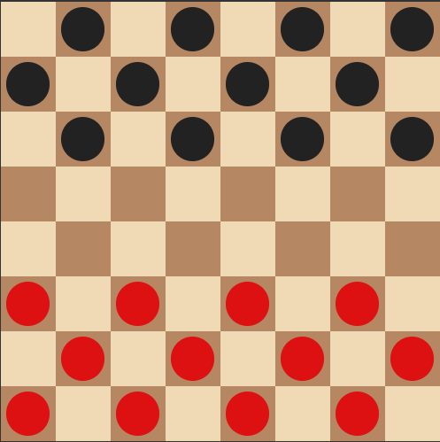
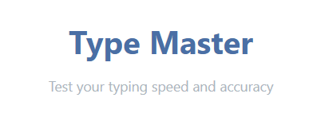

My Projects

E-Commerce Website
A full-featured online store with product listings, cart functionality.

Checkers Game
A digital version of the classic Checkers board game, where two players take turns to capture each other’s pieces using strategic moves.

Typing-Master
TypeMaster is a sleek, professional-grade typing speed test web app designed to help users measure and improve their typing skills with precision analytics and an intuitive interface.